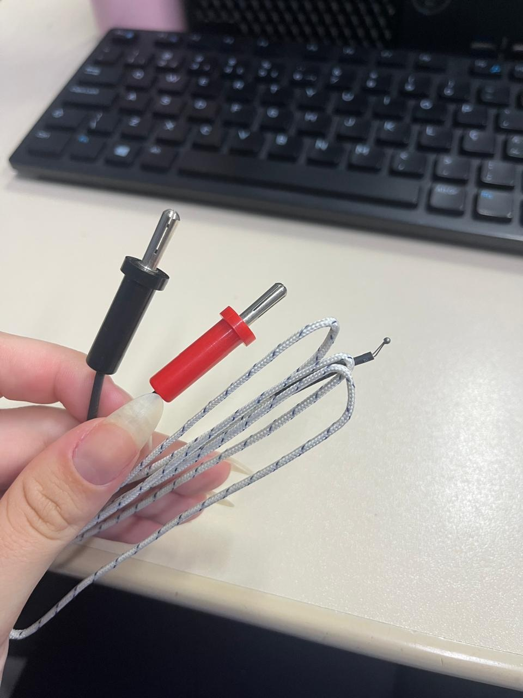
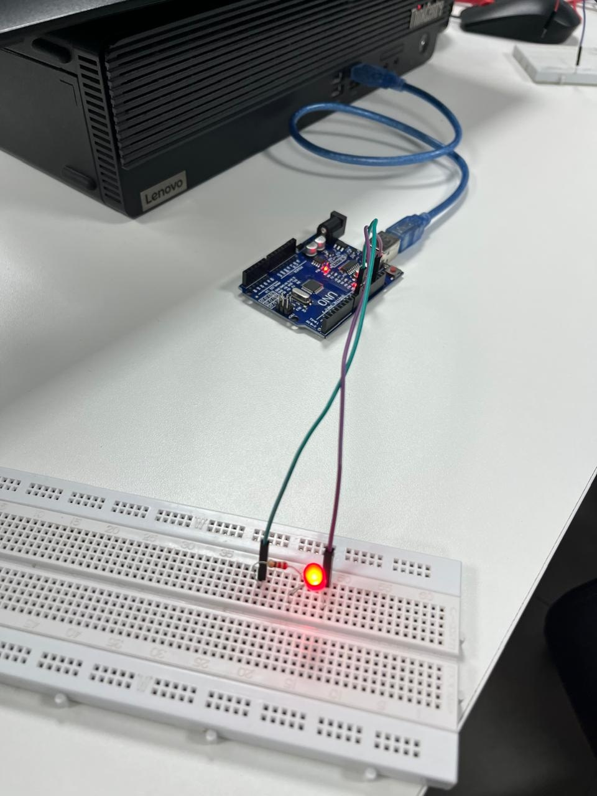
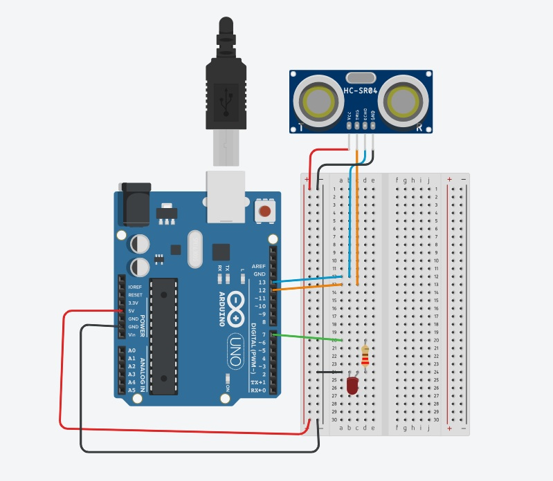
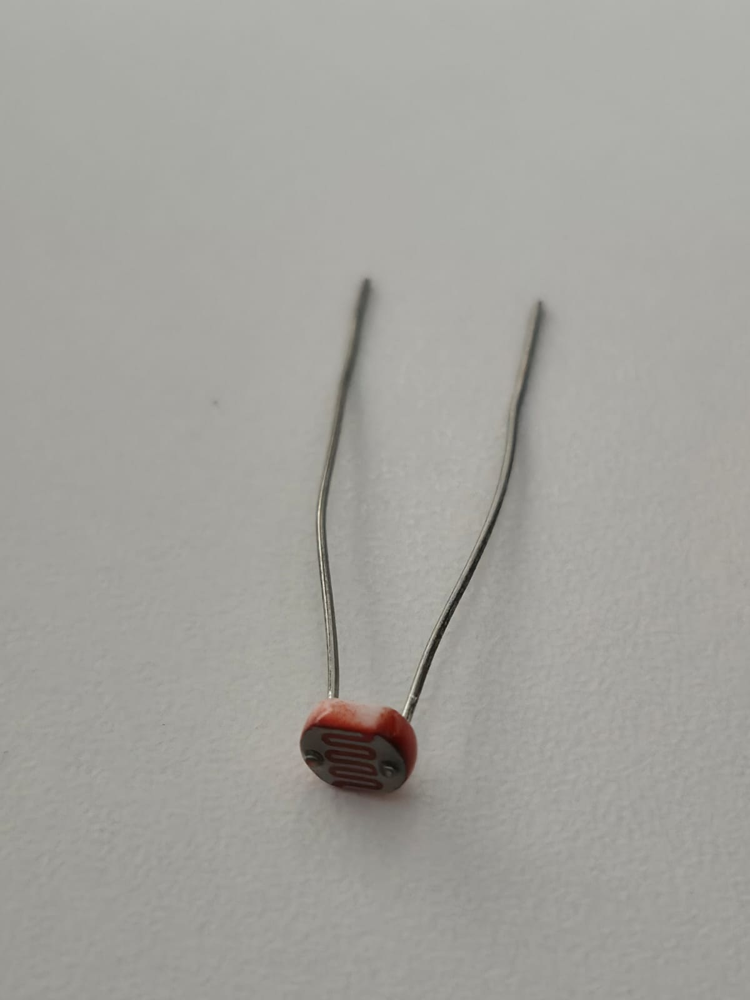
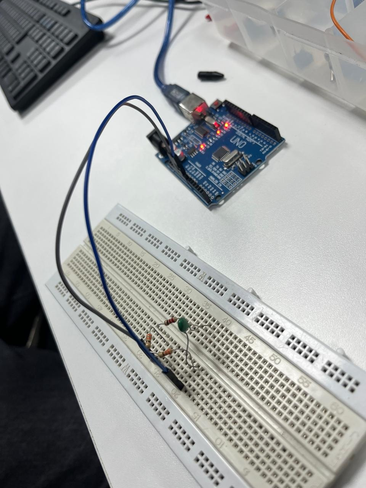

O que é o Sensor TNC?
O sensor NTC (Negative Temperature Coefficient) é um termistor cuja resistência elétrica diminui à medida que a temperatura aumenta. Fabricado com óxidos metálicos, oferece alta sensibilidade e precisão, sendo ideal para monitoramento e controle de temperatura em sistemas de refrigeração, ar-condicionado (HVAC) e eletrônicos (Arduino, IoT).
Sensor termopar tipo K
O sensor termopar tipo K é um dispositivo de medição de temperatura industrial amplamente utilizado, composto por fios de cromel (níquel-cromo) e alumel (níquel-alumínio). Conhecido pela sua robustez, opera em faixas amplas de temperatura, tipicamente de 200°C a 1260°C, destacando-se pela resistência a oxidação em altas temperaturas.

Exemplo de medição em mili volts do termopar Tipo K
Como selecionar um sensor de temperatura?(Observar escala)
Selecionar um sensor de temperatura exige equilibrar a faixa de operação (escala), a precisão necessária, o tempo de resposta e as condições ambientais. A observação da escala de temperatura é o critério primário, pois determina a tecnologia (termopar, RTD/Pt100, NTC) que suportará o processo sem danos.
O que é dimerização?
A dimerização é o processo de controlar a intensidade da potência fornecida a uma carga, geralmente para ajustar o brilho de uma lâmpada ou a velocidade de um motor.
Em termos simples: se um interruptor comum é "tudo ou nada" (ligado ou desligado), o dimmer é o controle que permite o "meio-termo".
Exemplo de dimerização com o LED a partir de um programa temporizado, como por exemplo(dimerização a cada 100 ms).

Sensor Ultrassônico

Funciona como o "sonar" de um morcego. Ele emite uma onda sonora de alta frequência que bate em um objeto e volta. Medindo o tempo desse percurso, ele calcula a distância.
Aplicação comum: Robôs desvia-obstáculos e sensores de ré de carros.

Código do Tinkercad Ultrassônico:
.jpg)
Atuador Relé

Diferente dos anteriores, este não "sente", ele "age". É uma chave eletromecânica que permite que um circuito de baixa potência (como um Arduino) controle um aparelho de alta potência (como uma lâmpada 220V ou um motor).
Aplicação comum: Ligar lâmpadas de casa via Wi-Fi ou controlar portões eletrônicos.
Sensor de Cor

Possui LEDs (geralmente vermelho, verde e azul) que iluminam a superfície e medem a luz refletida. Ele analisa a intensidade de cada cor para identificar qual é o objeto à sua frente.
Aplicação comum: Separação de produtos em esteiras industriais por cor.
Sensor LDR

É um componente cuja resistência elétrica muda conforme a intensidade de luz que incide sobre ele. Quanto mais luz, menor a resistência.
Aplicação comum: Postes de iluminação pública que acendem sozinhos ao anoitecer.
Sensor de Vibração

Geralmente contém uma pequena mola ou elemento piezoelétrico que, ao sofrer um impacto ou balanço, fecha um contato elétrico ou gera um sinal de tensão.
Aplicação comum: Alarmes de carros, detecção de falhas em motores industriais ou sismógrafos simples.
Sensor NTC / PTC

São termistores, ou seja, resistores que variam com a temperatura:
NTC (Negative Temperature Coefficient): A resistência cai quando a temperatura sobe. (Mais comum).
PTC (Positive Temperature Coefficient): A resistência sobe quando a temperatura sobe.
Aplicação comum: Termômetros digitais, ar-condicionado e proteção de baterias.
`Para que serve o "Button Push"?
O Push Button (ou botão de pressão) é um dos componentes mais simples e essenciais na eletrônica. Sua função principal é interromper ou permitir a passagem de corrente elétrica em um circuito apenas enquanto ele estiver sendo pressionado.
Exemplo: